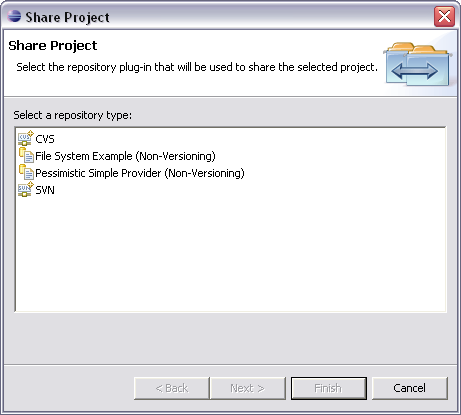

This is the process for taking a new project in your Eclipse workspace and importing it into a repository so that it can be managed by SVN. If you have already been using SVN and you have an existing working copy in your workspace that you want to connect to SVN, then you will likely want to follow the procedure for Connecting an Existing Project.
If you do not yet have your project ready to import into the repository, create a simple project that contains a few files so that they can be stored in the repository. A simple way to achieve this is to create a sample plug-in project by selecting and Give the project a name and click through to finish on the wizard.
To import a project into the repository, right click the project you want to import and select from the context menu.

This will begin the Share Project wizard. Select SVN as the repository type and click Next.

If you have already defined the repository location you want to store this project in, then select it in the list and click Next. Otherwise, select the Create a new repository location option and click Next. If you need to create a location then see the section on creating a new repository location for more information.
You must specify the folder name where you want to store the project. The folder name is relative to the URL of the repository location you specified in the previous step. All intermediate folders must already exist in the repository, but the final folder name must not already exist. You can use the Browse... button to select a path from within the repository. The Browse dialog also allows you to create folders, so you could use that option to create any intermediate folders. In the above example, we are going to follow the convention of storing the project in a ProjectName/trunk structure. In this example, the ProjectName folder must already exist and the trunk folder must not exist. Click Next or Finish when you are through.

The final page of the wizard is just a final confirmation page. When you click Finish, SVN will issue the mkdir command to create an empty folder in the repository. It will then checkout that folder on top of your local project. This will create the .svn folder inside your project, converting it into a valid Working Copy. Finally, the wizard will bring up the Commit Dialog so that you can commit everything into the repository. You do not have to commit everything or even anything. You may want to cancel the commit dialog and then go back to your workspace and do everything from the Team menu. For example, if you wanted to set SVN properties as part of the commit, you would want to first use the option and then use the option etc. Once you have things the way you want them you can then perform a .
Related Tasks
None
Related Reference
Connecting an Existing Project
Creating a Repository Location